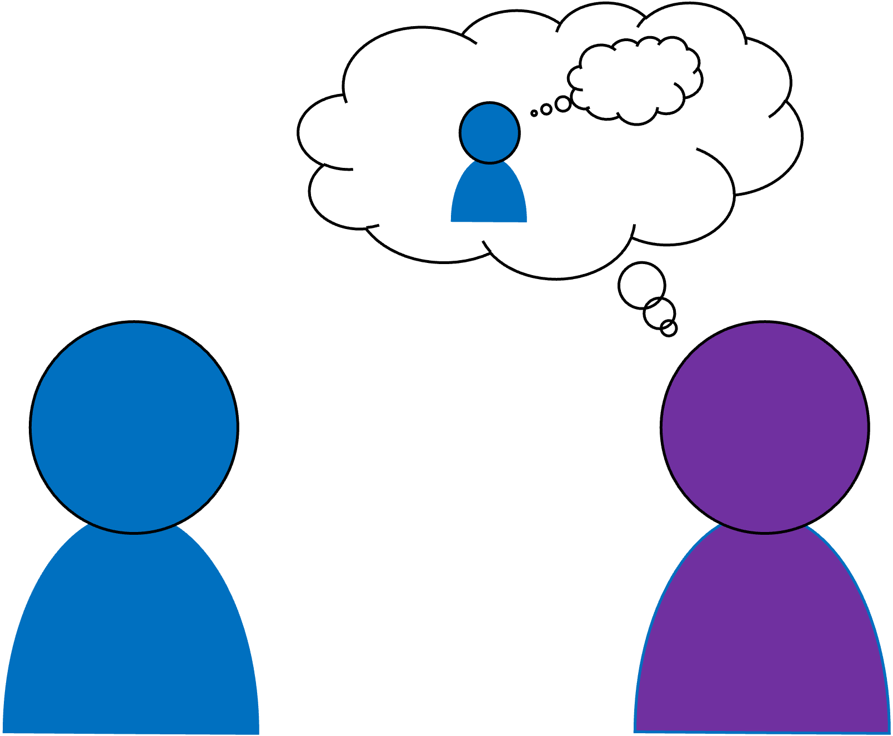
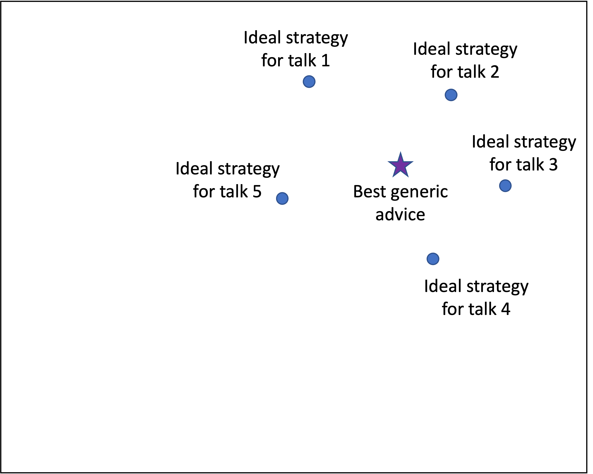
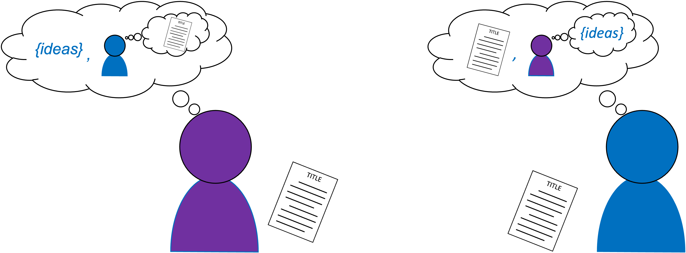
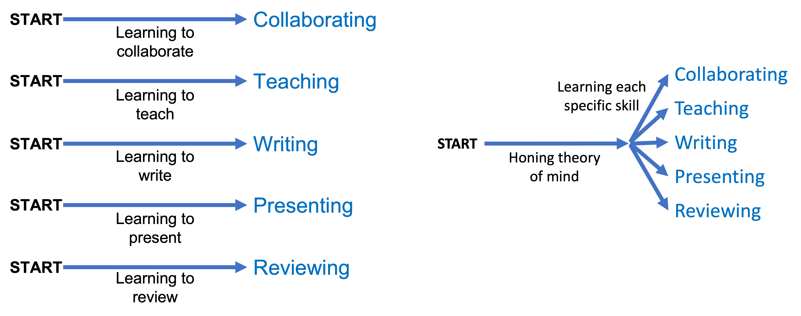

Theory of Mind as a Central Skill
for Researchers
Tom McCoy
1. Introduction
What skills do you need to be a successful researcher? The answer to this question is complicated because researchers carry out a wide range of tasks—writing, emailing, presenting, emailing, advising, emailing, etc.—and each task has skills associated with it. Nonetheless, I've come to believe that many of these skills can be unified under a single overarching ability: theory of mind. Honing this ability can make you more effective as a researcher in ways that generalize across many of the tasks that researchers perform.
To give an informal definition, theory of mind is the ability to reason about what's going on inside someone's head. Any time you make inferences about what someone is thinking or feeling, you are exercising your theory of mind. More precisely, theory of mind is the capacity to ascribe mental states—such as thoughts, goals, beliefs, and desires—to yourself and others. The term comes from cognitive science, where it's an active area of research; e.g., is this ability present in children? In nonhuman animals? In AI systems?

Theory of mind is the capacity to ascribe mental states—such as thoughts, goals, beliefs, and desires—to yourself and others. Having a strong theory of mind is central to succeeding at many of the tasks that researchers must perform.
Theory of mind is often shortened to ToM, but I'll avoid that abbreviation. Given what my first name is, I feel self-conscious writing sentences like "ToM is very important" or "You should pay more attention to ToM."
In this post, I'll first discuss why theory of mind provides a useful lens through which you can view many of a researcher's tasks. I'll then give examples of ways in which this perspective can inform how you carry out your work. My argument is based on the specific positions I've held (mainly as an academic at research universities), but I believe that the argument is relevant for researchers across career stages and types of institutions.
2. The importance of theory of mind
Most of what you do as a researcher is an interaction between your mind and someone else's mind. In some cases, you are creating content that you hope will be clear and compelling to others. In other cases, you are seeking to understand information that others have produced. These interactions will go more smoothly if you can reason about the other minds that you are interacting with—in other words, if you have a strong theory of mind.
As an example, consider the task of giving a talk. Anticipating the mental states of your audience can help identify several ways in which you can make your talk clearer:
- People have trouble grasping new abstract concepts. Thus, you should use concrete examples to illustrate those concepts.
- People's attention might wander. Thus, you should restate your main point several times in case someone misses it the first time.
- If there's a lot of text on your slides, people might get distracted reading the text instead of listening to you. Thus, you should avoid large blocks of text.
So far, the conclusions that we've drawn are standard pieces of wisdom ("use concrete examples", "restate your main point", "avoid large blocks of text"). So why should we bother with theory of mind when we could get to the same place by asking anyone for talk advice?
The benefit of exercising theory of mind is that it enables you to derive the advice on your own, rather than needing someone else to provide it. This difference matters. If you rely solely on pointers from others, you are limited to coarse-grained tips such as "use concrete examples." In contrast, if you can put yourself in the shoes of your audience, you can derive more detailed conclusions about the optimal way to present your specific content to your specific audience. Here are some examples of the sort of reasoning you might do:
- "In the department where I'm speaking, there's a faculty member who has done work that's closely related to my project. Thus, I should mention her work in my talk because many audience members will know her research and will wonder how mine relates to it."
- "My talk involves the machine learning concept of attention, but I'm speaking in a psychology department, where attention has a very different meaning. Thus, to avoid confusion, I should explicitly note that the two fields use this term differently."
- "This talk is part of a job interview. The job ad said they want someone who can mentor student research. Thus, I should highlight my projects that involve student collaborators, to show that I have mentorship experience and that I value my students' contributions."
Different settings can require different strategies. If you're speaking to a general audience, you might want to avoid dense math to maximize clarity. If you're speaking to a computer science department, including a slide of dense math might actually be a good idea because it could help you gain the interest of theoretically-minded audience members. Therefore, reasoning about specific contexts is important because what's effective can change with the context.

When you are giving a talk, there are different strategies that are ideal for different settings. This figure represent's each talk's ideal strategy as a point within a larger space that represents all possible talk strategies. If someone is giving you generic advice about presenting, the best they can do is to specify the average of all these strategies, represented by the star. That average advice will work fine, but it won't be optimal for any given talk. To find the best strategy for a given talk, you must be able to fine-tune the generic advice for your specific situation so that you can move from the star to any of the circles—a task for which theory of mind is very helpful.
3. Examples of applying theory of mind
Just a few paragraphs ago, someone was saying that you should use concrete examples to make abstract points clearer. Therefore, I guess I'd better do that! In the space below, I list a dozen tasks that researchers are faced with, along with examples of how applying theory of mind can be useful in these settings.
Caveat: When I list these examples, I don't have specific memories in mind. Therefore, if you're one of my students and/or collaborators and you think I might be complaining about something that you did, I can guarantee that I'm not. I've only listed points below if they've been relevant so many times that specific instances no longer stand out.
3.1 Reviewing
If you're writing a review of a paper, consider the perspective of the paper's author. How would you react to the review if you were the author? Would you find it constructive or destructive? Would the review's criticisms be clear?
- Don't give vague criticisms such as "the results aren't novel." If it's true that the results aren't novel, you should list the previous papers that did the same thing so that the authors can figure out how to articulate what distinguishes their paper.
- Think not just about the content of your review but also the tone. This might be the author's first paper, in which case a mean-spirited review can be damaging—potentially to the extent of convincing them not to pursue research further. In addition, if you're unnecessarily harsh, the authors might dismiss you as unreasonable, whereas a more constructive tone will make them more receptive to incorporating your feedback and making the paper better.
- Remember that not all readers are the same as you. Therefore, even if you personally find the paper uninteresting, ask whether there will be other readers who would find it interesting. If so, that might be a reason to recommend accepting the paper even though you are unenthusiastic about it.
3.2 Interpreting reviews
When you receive reviews on a paper you have written, try to reconstruct what the reviewers were thinking when they wrote their reviews. This practice can sometimes be more useful than taking reviews solely at face value.
- Reviewers sometimes make criticisms that are objectively false, such as saying you failed to discuss a relevant paper that you actually did discuss. It's tempting to reply by simply pointing out that the reviewer is wrong, but if it's clear that the reviewer made an effort to understand your paper, you should ask why they missed this discussion and consider revising your paper to make it clearer. Even though the reviewer was wrong, it's likely that the points that confused them will confuse other readers too, so by addressing their concern you will make the paper better. After all, it's not ideal if your paper is so convoluted that it takes lawyer-like reasoning to understand it. You should strive for it to be clear even to careless readers.
3.3 Collaborating
- If you have new results to share with your team members in a meeting, think about what information will be most useful for enabling them to understand what you did and give feedback on it.
- Don't give too little information. You could say, "I tried the method we discussed last week, and it worked!" But that doesn't give your collaborators a clear sense of how well the method worked. A better approach is to briefly describe how you evaluated the method and then state what your numerical results are, so that your collaborators can judge for themselves how well the method worked.
- Don't give too much information. If you present an ocean of graphs, your collaborators might be bewildered and not know what to focus on. It's often better to present just the results that are important for moving the discussion forward and bring up other plots only if they become relevant.
- Remember that your collaborators might need a reminder of where the project is. Although you've been focusing on this project all week, they might not have thought about it since the last meeting.
- If you're on the other side—getting an update from a collaborator who has results to share—consider their perspective as well.
- E.g., your first reaction to what they show you might be, "The color scheme in this plot is incomprehensible." But you should probably not lead with that observation because they've likely invested a lot of effort in getting these results, and they might be discouraged if the first feedback they get is a complaint about low-level formatting.
- If you're sending your collaborators a paper draft for feedback, think about whether the title of the document will make it clear which paper it is.
- Don't name the document paper.pdf; even if this is your only project, your collaborators might have other papers in their life, such that paper.pdf is not a very informative title.
- Similarly, suppose you're submitting to a journal called TACL. Calling the document tacl_paper.pdf is also sub-optimal because your collaborators might be submitting other papers to that same journal.
- It can be helpful to include the date in the file name so that you can distinguish different revisions of the same paper.
- Overall, then, I tend to use file names that include a key phrase that identifies the project, the name of the venue we are submitting it to, and the date—e.g., raven_tacl_15aug2023.pdf. In settings where one of the most salient aspects of a paper is that you are its author (e.g., when submitting your dissertation), then you should also include your name (e.g., mccoy_dissertation_discover_11may2022.pdf).
3.4 Giving a talk
I discussed talks above, but here I will expand on that discussion, since talks are one of the most important settings for exercising theory of mind.
- People have trouble grasping new abstract concepts. Thus, you should use concrete examples to illustrate those concepts.
- When you use examples, think carefully about how they will be viewed. Your goal for the example is probably to illustrate some abstract point, but the example might also have other content that could be problematic or distracting. For instance, example sentences in linguistics are often intended to illustrate abstract grammatical features, but they also have a history of perpetuating gender stereotypes. Therefore, choose your examples with care—they should support your argument, not distract from it!
- People's attention might wander. Thus, you should restate your main point several times in case someone misses it the first time. Whenever I finish one segment of a talk, I zoom back out to the talk's overall framing in order to briefly summarize the segment I just finished and explain how it connects to the bigger picture. That way, if someone got lost during this part of the talk, they can be brought back on track, instead of being lost for the entire rest of the talk.
- If there's a lot of text on your slides, people might get distracted reading the text instead of listening to you. Thus, you should avoid large blocks of text.
- Cater your content to your audience. You should consider the audience writ large (e.g., is it mainly theoreticians or engineers? Is it mainly undergrads or faculty members?) as well as individual people in it (are there people working on related topics who have a perspective you should acknowledge?). You probably have more that you could discuss than you have time for, so you can focus on the points that will be most interesting to this specific audience.
- Don't go over the time limit. No matter how exciting your research is, audience members are expecting the talk to finish at a certain time, and at least some of them will be annoyed if it takes longer than that. They might have lunch plans after your talk, or plans to go home and relax after a long day. If your talk starts to encroach on people's lunch time or Netflix time, their favorable view of your talk might quickly turn negative.
3.5 Teaching
Most of the points that are relevant to giving a talk also apply to teaching. Here are some other considerations that are specific to teaching:
- Sometimes teachers get excited about their topic and mention advanced connections that go beyond what students will be tested on. If you do this (as I often do!), make sure to clarify that students will not be expected to remember these points. Otherwise, they might get worried about the fact that they don't fully understand what you're saying, turning what you had intended to be a fun tangent into a source of stress.
- When discussing talks, I said to avoid large blocks of text. This advice still applies to lecture slides to some extent, but there's the countervailing fact that students might use your slides to study, for which it's helpful if the slides are understandable without your narration. Therefore, it might be appropriate for your lecture slides to contain more text than you would include in a conference talk.
3.6 Asking questions after a talk
Consider the perspective of the speaker and also the perspective of the other members of the audience.
- Will your question be of interest to other audience members? If yes, you should absolutely ask it! If not (e.g., if it's some minor technical nitpick), then maybe you should save it for a one-on-one conversation with the speaker.
- Are you hesitant to ask your question because you're worried it's already clear to everyone else? Remember that, if you're confused by something, other people in the audience are likely to be confused by it too—so you're doing a service to both the speaker and the audience by asking for clarification!
- Is your question aggressive? If so, tread carefully! You might come across poorly if you seem obnoxious. It's certainly fine to raise concerns, but if you're going to say something negative, try to frame it respectfully and constructively.
3.7 Presenting a poster
Different people will want different levels of engagement with the poster, so you should make it easy for them to engage as much or as little as they want.
- Don't trap anyone at your poster. You don't want poster session attendees to be in a situation where they would like to leave but can't because your narration is long and they feel bad cutting you off. My recommended approach: Prepare a one-minute summary of your poster and a five-minute summary. When someone comes up, ask if they would like the one-minute version or the five minute version. If they want more information once you're done, they can ask for it. By putting the timing in their hands, you avoid a situation where they feel trapped.
- People who pass by will need to decide if they want to invest the time to understand your poster in more detail. To facilitate this, it's helpful to make the poster's main point extremely clear so that they can read this point and decide if they want to learn more. I typically include a bullet point that says "main point" in bold both at the top left of the poster and the bottom right of the poster, since these are the two places where someone is likely to go looking for the main point.
3.8 Writing a paper
- In many fields, there are certain viewpoints that act like black holes: if you say something that is vaguely similar to one of these viewpoints—let's call it viewpoint X—the gravitational pull of viewpoint X is so strong that your readers assume you're arguing for viewpoint X, even though you aren't. Black hole viewpoints are tricky because it's not enough to simply avoid expressing them. Instead, the only way to prevent possible misinterpretations is by explicitly stating that you are not advocating for viewpoint X.
- As one example, I often do work analyzing large language models (LLMs—systems like ChatGPT). I've found that research about LLMs tends to get interpreted as making one of two extreme claims—either "LLMs are perfect, superhuman intelligences" or "LLMs are completely useless." Both of these views have a strong gravitational pull, creating the risk that readers will assume that your paper is arguing for whichever of these two camps is closest to your framing. Therefore, in a paper where we showed that some tasks are harder for LLMs than others, we included a section called "What we are not arguing", to clarify that our criticisms should not be interpreted as claiming that LLMs are completely useless.
- I once heard this point expressed as follows, but I sadly can't remember where I heard it: "When you say something, people don't just hear what you say. They also hear the echoes of what others have said using similar words."
- Readers sometimes skim papers instead of reading the whole thing. Therefore, you should try to make your paper skimmable: the main point should be clear even if the reader doesn't read closely.
- One instantiation of this point is that you should make your figures standalone, so that they can be understood without reading the main text; that way, the figures can serve as a brief summary of the paper.
- Minimize the number of technical terms that you introduce. Each new word that the reader has to remember creates additional cognitive load. It's fine to use some new terms, but if there are too many, readers will get confused.
- This issue is particularly acute for acronyms because acronyms don't give much of a clue about what they mean. That's partly why I've stuck with the phrase "theory of mind" rather than "ToM"—even if you forget the definition that I gave above, you can understand "theory of mind" reasonably well just by thinking about what that phrase means. In contrast, it's hard to derive the meaning of "ToM" just by looking at it, so using that abbreviation places a greater demand on the reader's memory.
- When you need to name part of your project, choose names that are interpretable. For instance, you could name your experiments "Experiment 1", "Experiment 2", and "Experiment 3", but the reader might have trouble remembering what "Experiment 2" refers to. In this case, you might give each experiment an interpretable tag that you include in parentheses whenever you mention it, such as "Experiment 1 (English only)", "Experiment 2 (Japanese only)", and "Experiment 3 (English and Japanese)."

Applying theory of mind. Left: When producing content, you should consider both the ideas that you want to express as well as how your audience will interpret the content that you produce, so that the content you create will be effective at communicating your ideas to your audience. Right: When consuming content, you should consider both the content itself as well as the thought process of the content creator so that you can gain as complete an understanding of the content as possible.
3.9 Establishing an online presence
Members of the field can have several reasons why they might want to look up who you are. You should make this easy for them by creating a website that has all the information they might want. Theory-of-mind-based reasoning can help you think through what content should appear on your website:
- People might be looking you up to figure out what you work on. Therefore, you should include a list of publications and perhaps also a few paragraphs describing your interests.
- People might be looking you up to contact you. Therefore, you should include contact information on your website.
- I realized that one common reason why I search for someone is because I have a meeting scheduled with them and want to identify topics we could discuss. (This is relevant, for example, when I'm meeting with a visiting speaker). Under the assumption that other people might search for me under similar motives, I added a section to my website listing conversation topics that I'm interested in.
3.10 Sending emails
- If you have several questions to ask or points to raise, consider whether they should be grouped together in one email or spread across several.
- If the points are closely related, it might make sense to group them so that the recipient only needs to think about this broad topic once instead of re-familiarizing themselves with it for each email.
- But there are also situations where it makes sense to split the points across emails. Your recipient might not want to respond until they can answer all your questions. So, if you group together a simple question and a question that requires more thought, you might not get a response to either until the recipient is ready to answer the hard one. If you instead split the questions, you might get a response to the easy one more quickly since its timeline isn't bound to the timeline for the harder one.
- If your email contains multiple points, consider the perspective of the recipient when they need to reply to you. I recommend presenting your points as a numbered list because this will make the task of responding easier for your recipient: they can simply say "1 - Yes. 2 - Next Thursday." etc. Without such numbering, they might instead need to say "Yes, I agree that we should submit the paper. A good time to meet would be next Thursday."
- Busy people might skim an email if it is too lengthy. Thus, if you make your email concise, you reduce the chances that your recipient will miss some points in it.
3.11 Preparing a CV
CVs might seem like straightforward, informational documents, but you actually have a lot of flexibility when creating them. Reasoning about what people will look for when reading your CV can help you decide on the structure and content.
- If you're applying for a job, consider creating explicit headings that mirror the factors listed in the job ad. For example, if the ad mentions mentorship, have a section labeled "Mentorship."
- You're allowed to include explanatory notes in your CV. When I was applying to jobs in linguistics departments, I added a note at the start of my "publications" section explaining that, in my subfield (computational linguistics), conference papers are considered to be full publications. This is not the case for most other subfields of linguistics, so including this note seemed important for ensuring that my conference papers received the appropriate amount of credit.
3.12 Receiving advice
As a researcher, you will receive advice from many people—mentors, peers, random people writing blog posts about theory of mind. It's useful to think carefully about what motivated the person to give this advice so that you can decide how to react to it.
- In some cases, you might realize that their motivation is based on assumptions that don't apply to you, such that you can safely disregard their advice.
- In other cases, you might realize that their advice is based on a broad principle. Even though they were applying this principle to one specific scenario, you might consider extending this principle more broadly. For instance, if someone advises you to be more assertive when answering questions after a talk (rather than making concessions to placate question-askers), you might realize that this aligns with a broader principle of standing firm on the points you believe in—a principle that is also relevant in other settings such as responding to reviewers and brainstorming with collaborators.
4. From skills to meta-skils
I've argued that many research-related skills (reading papers, writing papers, listening to talks, giving talks, etc.) can be viewed as sub-cases of the following broader ability:
Theory-of-mind-based reasoning: The ability to consider the state of someone else's mind so that you can determine how to interact effectively with that person.
This argument frames theory of mind as a meta-skill—a skill that enables you to generate new skills on the fly. Meta-skills are valuable because researchers often face new tasks with little guidance. For instance, the first time I was asked to write a recommendation letter, I did not get instructions on how to do so, and I had never even seen a recommendation letter before! If you have meta-skills that enable adaptation to new tasks, such situations will be much less daunting. That's because new tasks will no longer be fully new. Instead, they'll merely be new applications of a familiar skill—theory-of-mind-based reasoning.
To give an example of how a meta-skill can let you generate a new skill, consider the aforementioned task of writing a recommendation letter. If you reason about how the letter's reader will think, you can identify several properties that the letter should probably have:
- The reader will want to know how well you know the applicant since this affects how much they can trust your opinion. Thus, you might want to say how long you've known the applicant and what relationship you have to them.
- It's easy for a letter writer to use empty phrases like "hard-working", so the reader will naturally be suspicious of generic praise. Thus, you should include specific anecdotes to support your general statements.
- There are likely to be specific skills and traits that are most important for the position that's being applied to. Thus, you should think about what those skills or traits are so that you can explicitly discuss them in your letter.
- The reader probably has access to the applicant's resume, so merely restating what's in the resume won't add much to the application. Thus, you should think about what insight you can offer that's not apparent elsewhere, since that's where the letter has the greatest impact. (E.g., if the applicant was part of a collaborative project, you could describe the applicant's specific contributions to the group; otherwise the reader might not be able to tell how much credit the applicant should get for that project).
By enabling you to reason in this way, your theory of mind allows you to generate a new skill—the ability to write recommendation letters—without needing lots of practice in that specific task.
You should absolutely seek advice from more experienced researchers in such settings. Nonetheless, the meta-skill of reasoning about tasks on your own is important for going beyond the advice you receive so that you can fine-tune the advice for your specific situation. For many of the tasks that researchers face, theory of mind is a critical part of such fine-tuning.

Skills and meta-skills. Left: If each skill is viewed separately, each one takes an extensive amount of time to learn. Right: If these skills are connected via the meta-skill of theory of mind, then much of the learning process can be shared across skills, requiring less overall learning to become effective in each area. This image is inspired by Figure 1 of Finn, Abbeel, and Levine (2017).
Meta-skills have the desirable property of transferring across situations. Therefore, if you can cultivate your meta-skills, the hard work that you do to become more effective in one area will also make you more effective in other areas. Becoming a better writer will make you a better speaker. Becoming a better reviewer will make you a better mentor. Becoming a better reader will make you a better collaborator. Such transfers are possible because all of these roles share theory of mind as a central component, and improving your theory of mind in one setting improves it for other settings too.
To be clear, not all skills can be subsumed under theory of mind, including many of the skills involved in conducting your actual research. (You may have noticed that "conducting research" is absent from my list above, even though it's a reasonably important part of being a researcher!) With that said, enhancing your theory of mind is likely to be one productive step toward advancing your research career.
5. Concluding remarks
Most of what you do as a researcher involves interacting with other minds. If you can hone your ability to understand how those minds work, your job will become easier, more pleasant, and more rewarding.